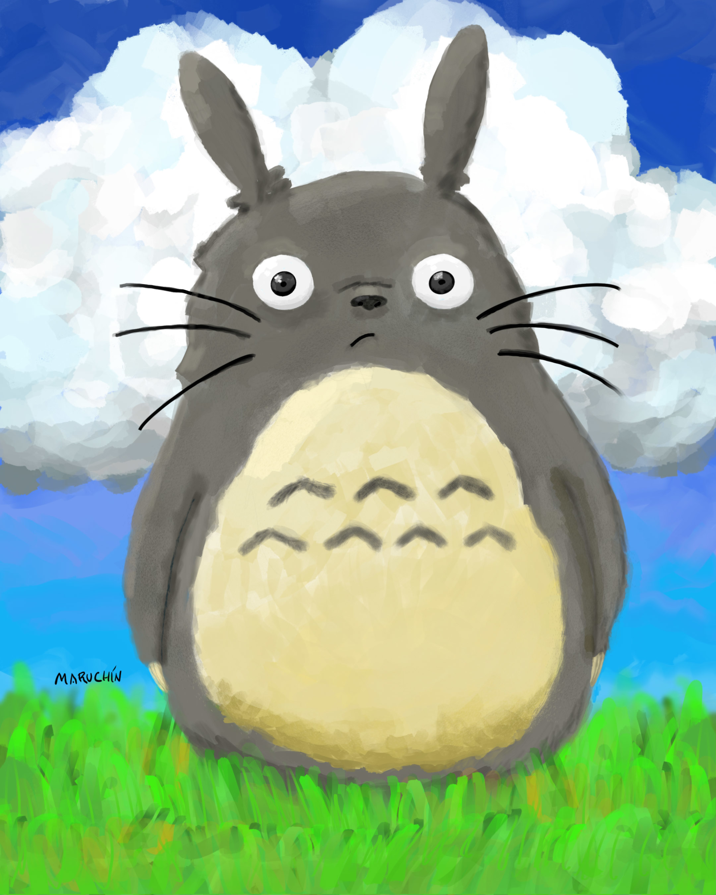
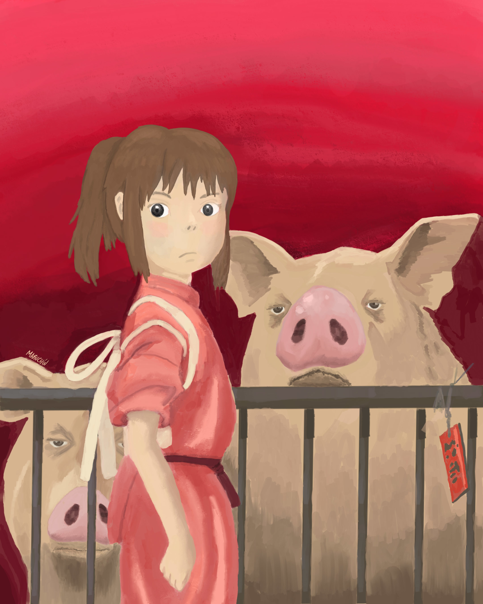
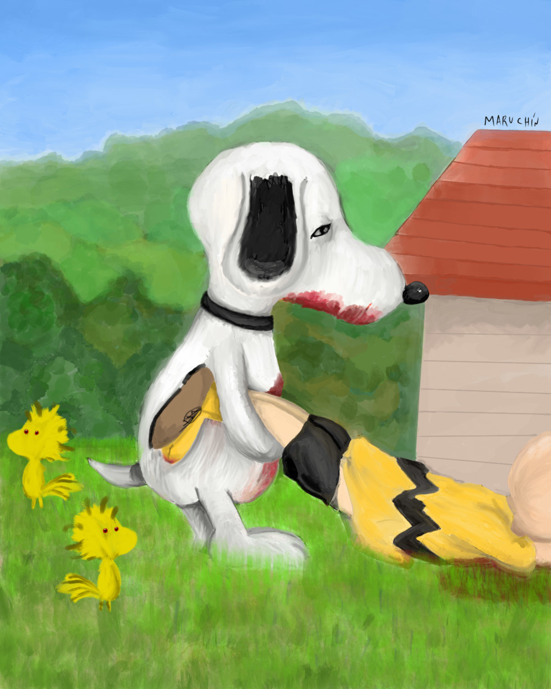
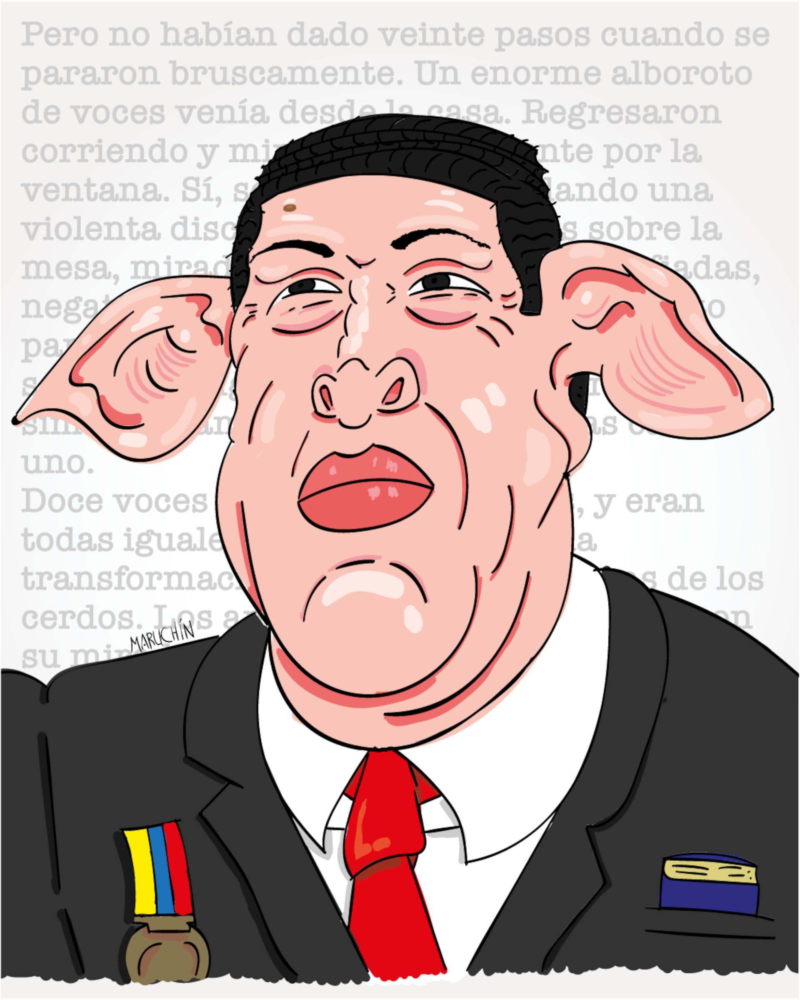
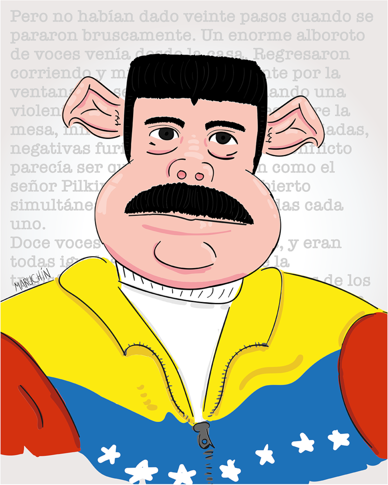
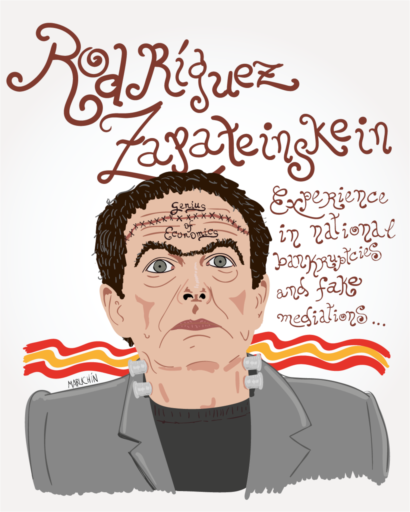
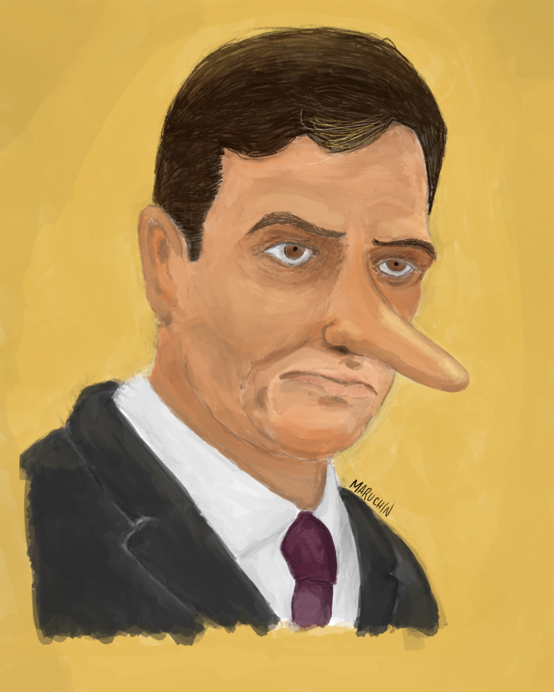

Totoro

Cando es adolescente e non sabes cómo peñerte.
O durminte de Laputa

Máis que durmindo está esperando que chegue o momento de espertar e aínda que pareza profundamente
durmido, realmente está a un intre de saír do letargo.
Chihiro

Retrato de Chihiro cos seus pais.
Snoopy e os seus secuaces

Nas relacións tóxicas sempre hai que esperan un momento de furia. Por iso hai que facer todo o
posible por fuxir delas.
Hugo Chávez, o fundador

Rebelión na granxa á venezolana: cerdos que terminaron levantándose sobre súas patas traseiras, tal e
como fixeran os seus antecesores.
Nicolás Maduro, o sucesor

O sucesor nos réximes non soe ser o máis capaz, senón o máis fiel. Como digno sucesor do réxime
posee as mesmas formas autoritarias dos que cavaron a tumba na que o país que din amar, defender e
respectar.
Rodríguez Zapateinskein

Político "iluminado" que sempre actúa convencido. Non pode ser discutido porque foi ungido polo
poblo español. Só pode ser xulgado pola historia, non polos seus coetáneos. Os outros sempre están
equivocados.
Pedro Sánchez

É o Rei de tódalas Españas Federales posibles; monárquico e anarquista se fai falta. Progresista e
de eaquerda no de actos sino de corazón. O seu maior mérito; gañar a Guerra Civil 80 anos despois.